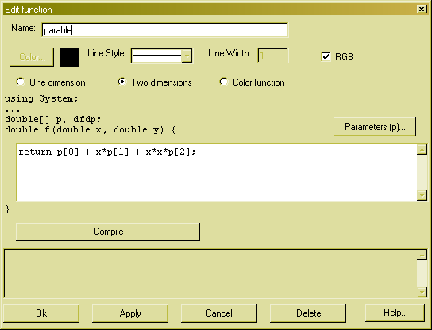

Edit Functions

In the textbox at the top you can enter a name for the function. If a legend is displayed, this name appears in the legend. The name also appears in the edit menu, so you can change the functions properties.
Below you can change the functions drawing attributes. You can change the graphs color by pressing the Color... button, or you can change the line style and the line width in the appropriate controls. If your function is a two dimensional function you can further choose the color palette with which the function is displayed. If you check the RGB checkbox, a Red-Green-Blue palette is used to draw the function. If the checkbox is not checked, a monochrome palette will be used, using the color set by the Color... button.
Below the drawing attributes you can select the type of your function. You can choose between a one dimensional, two dimensional and a color function. The one and two dimensional function types represent a function in one or two variables, that return a double value. The color function type is a function in two variables that returns a color.
Below the function type is some text that shows the headers of the C# source text of the function. This text varies according to the function type. In addition to the bare function, there are two double[] arrays defined, p and dfdp.
The array p is an array of parameters your function depends on. You can edit the parameters by pressing the Parameters (p)... button. This will show a dialogbox for editing the parameters. If you want to do Levenberg-Marquardt fitting with your function you might want to also supply the derivative information, e.g. the derivatives of df/dp. If you omit the derivative information in your function, the Levenberg-Marquardt fit algortihm will use numerically calcualted derivatives and will require more function evaluations. There is also another fit algorithm called Nelder & Mead that requires no derivative information. Here is an example of a straight line with derivative information:
dfdp[0] = 1; dfdp[1] = x;
return p[0] + x*p[1];
Here is an example of a gauss curve with derivative information:
double arg, ex, fac;
arg = (x - p[1]/p[2]);
ex = Math.Exp(-arg*arg);
fac = p[0]*ex*2*arg;
dfdp[0] = ex;
dfdp[1] = fac/p[2];
dfdp[2] = fac*arg/p[2];
return p[0]*ex;
Here is an example for a two dimensional function that will draw the Mandelbrot set:
double xn = 0, yn = 0, x2 = 0, y2 = 0;
for (int n = 0; n < 500; n++) {
yn = 2*xn*yn + y;
xn = x2 - y2 + x;
x2 = xn*xn;
y2 = yn*yn;
if (x2 + y2 > 4) return n;
}
return 0;
If you have entered your functions C# sourcecode, you can press the Compile button to check for syntax errors.
If you are finished you can press the Ok button. If you want to delete the function, you press the Delete button.